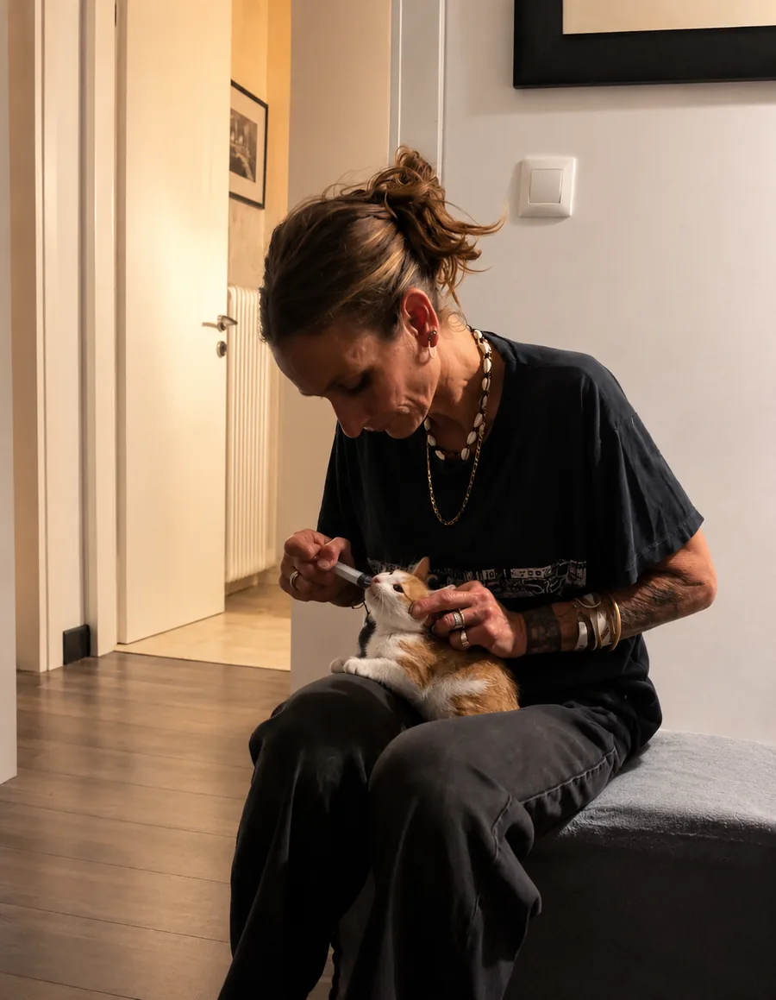
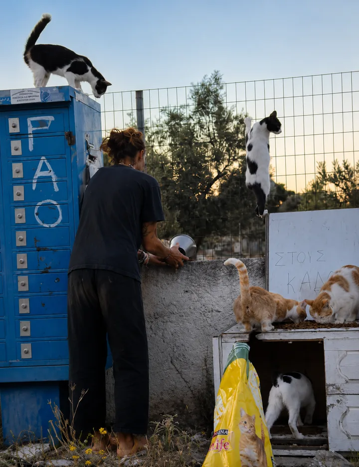
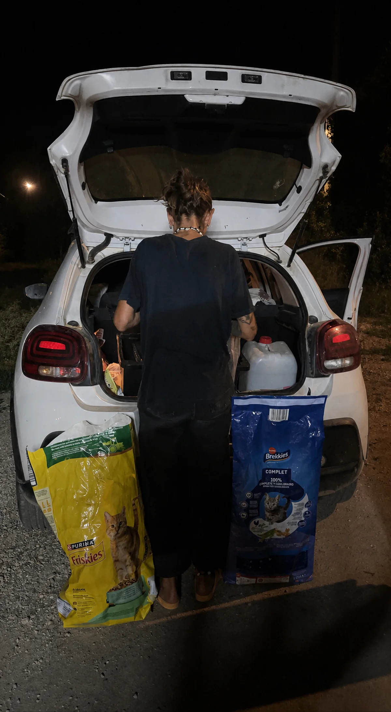

Γνωρίστε μια γάτα
Γνωρίστε γάτες με την τρέχουσα κατάστασή τους, ειλικρινή περιγραφή και διαφανή διαδικασία υιοθεσίας.
Δείτε τις γάτεςΗ Margo φροντίζει καθημερινά μεγάλο αριθμό ζώων γύρω από την Αρτέμιδα. Οργανώνουμε τη στήριξη, τεκμηριώνουμε τα έξοδα και μοιράζουμε τις εργασίες σε περισσότερους ώμους — ώστε αυτό το έργο να μη στηρίζεται μόνιμα σε ένα άτομο.

Δημοσιεύουμε μόνο στοιχεία που είναι τεκμηριωμένα ή επισημαίνονται ρητά ως εκτίμηση. Κάθε αριθμός συνοδεύεται από ορισμό και χρονική περίοδο.
Γνωρίστε γάτες με την τρέχουσα κατάστασή τους, ειλικρινή περιγραφή και διαφανή διαδικασία υιοθεσίας.
Δείτε τις γάτεςΑναλάβετε μια σαφώς οριοθετημένη εργασία επιτόπου ή εξ αποστάσεως — με ρεαλιστικό φόρτο και συγκεκριμένο υπεύθυνο επικοινωνίας.
Δείτε τους ανοιχτούς ρόλουςΣτηρίξτε κτηνιατρική περίθαλψη, στειρώσεις, τροφή ή ένα σαφώς περιγεγραμμένο έργο.
Επιλέξτε πώς θα βοηθήσετεΠριν από χρόνια η Margo άρχισε να φροντίζει μερικές αδέσποτες γάτες γύρω από την Αρτέμιδα. Από λίγα ζώα έγιναν πολλά. Μια πυρκαγιά κατέστρεψε το beach café που είχε — τα ζώα έμειναν, και μαζί τους η καθημερινή ευθύνη.
Σήμερα κάνει τις διαδρομές της, οργανώνει θεραπείες και επωμίζεται πολλά η ίδια. Ακριβώς εδώ παρεμβαίνει η πρωτοβουλία: να οργανώσει τη γνώση, να δημοσιοποιήσει τα έξοδα, να μοιράσει τα καθήκοντα.
Δείτε την ιστορία της Margo
Τακτική σίτιση και παρακολούθηση σε πολλά σημεία της περιοχής.
Κτηνιατρική εκτίμηση, θεραπεία και προληπτικά μέτρα βάσει επαγγελματικής κρίσης.
Προφίλ, στοιχεία υγείας, σαφείς αρμοδιότητες και υπεύθυνες διαδικασίες υιοθεσίας.
Οργάνωση εργασιών, συνεργατών, εξόδων και προόδου, ώστε να μην εξαρτώνται όλα από ένα άτομο.

Ο Murka-Katzenhilfe e. V. (Πρωτοδικείο Bochum, VR 4939) διαχειρίζεται τις δωρεές και τις υιοθεσίες προς τη Γερμανία.
Τα Vets4life και OmniVET περιθάλπουν τα ζώα με μειωμένες χρεώσεις.
Τα Pet City, Pet Shop Manos, Pet Point και Dogit προσφέρουν εκπτώσεις σε τροφές.
Συνεισφέρει οικονομικά και φιλοξενεί μέρος των γατών που φροντίζονται.
Όλους τους συνεργάτες με στοιχεία επικοινωνίας θα βρείτε στη σελίδα συνεργατών. Πώς αξιοποιούνται οι πόροι φαίνεται στο Αντίκτυπος & διαφάνεια.